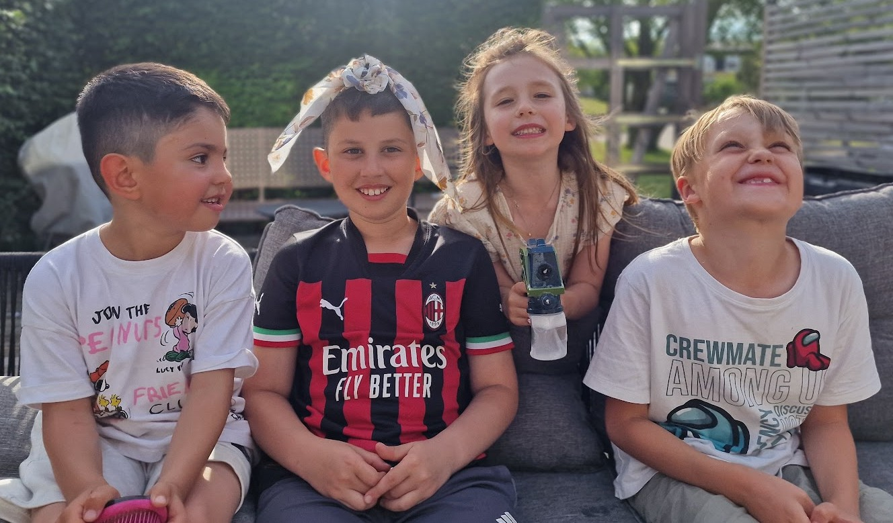
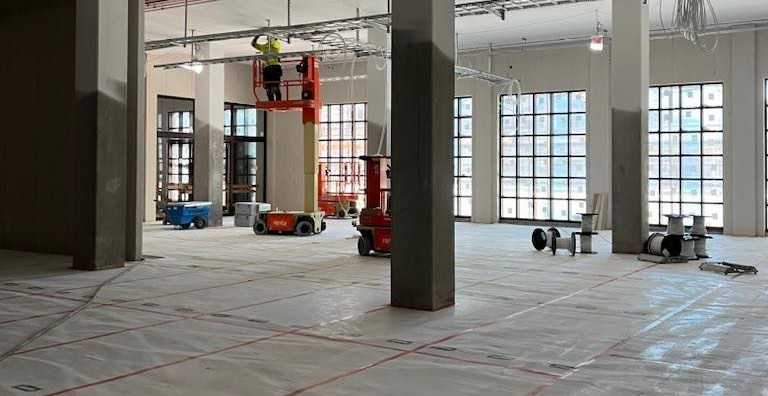
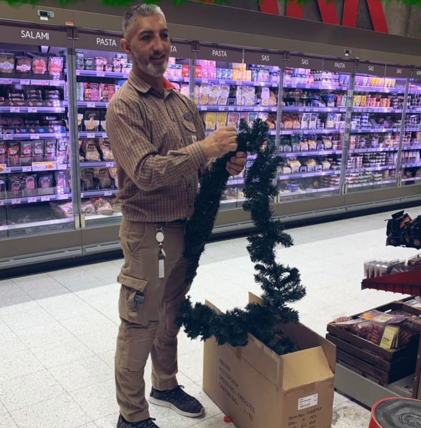
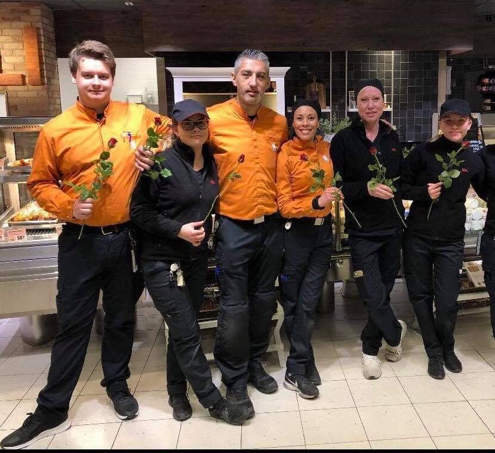

Om mig
Jag heter Joco Borghol. Det korrekta uttalet är Jåtså, men jag har fått höra många olika varianter genom åren, lika spännande varje gång någon ska uttala det för första gången. Jag har under hela mitt yrkesliv utvecklats inom ICA. Från mina första dagar i kassan till roller som avdelningsansvarig, färskvaruchef, försäljningschef och butikschef har jag samlat på mig bred erfarenhet av drift, ledarskap och kundupplevelse. Det som utmärker mig är min förmåga att skapa struktur, bygga starka team, kombinera inspiration med lönsamhet och framförallt problemlösning. Jag trivs bäst när jag får vara mitt i vardagens tempo, fatta beslut och utveckla både verksamhet och människor.
Bakom kulisserna
Jag har lätt för att hålla många bollar i luften och tycker om att driva på när mycket händer samtidigt. Jag vet att det kräver fokus både på mig själv och på teamet. Men i stunderna med familjen vill jag inget hellre än att vara där. Balansen mellan karriär och familj är något jag ständigt arbetar med. Jag lever tillsammans med Johanna och våra fyra barn Nikola, Aleks, Jolie och Leon. Vår vardag är fylld av läxor, träningar och aktiviteter, men vi vårdar våra traditioner. Fredagsmys och lördagsgodis framför en film är heliga stunder. För mig är familjen en plats att hämta energi och återfå perspektiv. Att vara närvarande hemma är lika viktigt som att leverera på jobbet. Efter livserfarenheter som satt spår vet jag att tiden med familjen är det mest värdefulla.
Vision
Min vision är att skapa struktur, bygga starka team och ge människor en bra upplevelse i vardagen. Jag vill driva förändring, förenkla arbetet och skapa en kultur där både medarbetare och kunder känner sig uppskattade. Det handlar inte bara om siffror och lönsamhet utan om helheten. När struktur möter engagemang och teamet växer tillsammans med kundernas förtroende, då kommer resultaten.
Framtid
Jag har under många år gett allt i butiksvärlden, ofta med många bollar i luften och fullt ansvar för både team, drift och resultat. Nu vill jag använda samma energi framåt mot nya mål. Mitt nästa steg handlar om att ta tillvara mina erfarenheter och kombinera dem med nya kunskaper genom nya utmaningar. Jag vill bidra till utveckling och lösningar som gör vardagen enklare. Det är samma tanke som i butiken, men med andra verktyg. Jag vet också att balans mellan arbete och familj inte är en kompromiss utan en nödvändighet. Efter många år med helger, röda dagar och kvällar vill jag prioritera annorlunda. Med samma driv som alltid vill jag nu vara med där framtiden formas, där handel möter digitalisering, och bidra med både erfarenhet och nya idéer. För mig handlar det inte om att bromsa, utan om att lägga energin där den gör störst skillnad.
Karriär
ICA Supermarket Limhamns Sjöstad (2022-2025) · Butikschef Färsk
”Var med från starten i ett nytt bostadsområde där jag satte grunden för struktur och kultur, och aktivt drev butikens utveckling framåt.”
Jag var en del av uppstarten av en ny butik i Limhamns Sjöstad och ansvarade för att bygga upp färskvaruavdelningarna från grunden. Arbetet omfattade rutiner för drift och bemanning, egenkontroll och matsäkerhet samt att säkerställa kvalitet i alla led. Jag ansvarade också för kontakten med tillsynsmyndigheter och deltog i samarbeten med konsulter inom lönsamhet och coacher inom ICA, där jag nyttjade deras expertis i mitt arbete och beslutsfattande.
Utöver det dagliga ansvaret arbetade jag med budget, försäljningsanalys, sortiment och prissättning för att stärka lönsamheten och skapa ett attraktivt kundmöte. Jag hade också övergripande ansvar för hanteringen av svinn och deltog i arbetet med att utveckla butikens försäljningsstrategi. Jag var väldigt operativ i den dagliga driften och använde min spetskompetens inom färskvaror tillsammans med ett öga för detaljer för att säkra både kvalitet och lönsamhet i vardagen.
Som en av tre personer i butikens ledningsgrupp var jag involverad i helheten och fick möjlighet att påverka viktiga beslut redan från start. Handlarens sätt att driva butik byggde på struktur, helhetstänk och att alltid ligga några steg före. Det låg mig nära och är också hur jag själv vill driva butik. Jag gick in i uppdraget med många erfarenheter och lämnade det med ännu fler. Tiden i Limhamns Sjöstad gav mig nya insikter, praktiska verktyg och en ännu bredare grund att stå på inför framtida utmaningar.
För mig blev det tydligt: med struktur, rätt människor och ett agilt arbetssätt kan man samtidigt skapa nöjda kunder, en fin butik och lönsamhet.

ICA Maxi Västra Hamnen (2019-2022) · Försäljningschef Färskvaror
”I en av Malmös största butiker fick jag möjligheten att växa i min roll och ta steget från säljledare till försäljningschef. Här lärde jag mig att leda stora team och insåg att verklig styrka byggs genom samarbete över gränserna.”
Jag började som avdelningsansvarig för Kött och Chark men tog steget upp till försäljningschef för färskvarorna efter bara några månader. Det handlade om att leda flera avdelningar parallellt, med olika team och höga krav på struktur och lönsamhet. Mitt fokus låg på att bygga sammanhållning. Jag sammansvetsade små team till ett större för att minska sårbarheten, skapa trygghet och säkerställa att vi alltid kunde leverera, även när trycket var som högst. Jag arbetade nära ledningsgruppen, utvecklade strategier för drift och bemanning och skapade rutiner som både höll i vardagen och drev resultat. Det var här jag verkligen förstod hur siffror och människor hänger ihop.

ICA Supermarket Värnhem (2016-2019) · Färskvaruchef
”Uppstart av ny butik i ett växande område. Jag fick snabbt inse att data och verklighet inte alltid går hand i hand, och att framgång byggs på förmågan att anpassa och skapa nya lösningar.”
Jag var med redan innan öppningen och hade ett finger med i det mesta, men spetsen låg i färskvarorna. Att få starta en helt ny butik gav mig möjligheten att bygga rutiner från grunden, inga gamla system eller arv, bara rena ytor och nya möjligheter. Jag byggde upp avdelningarna, satte struktur. Det var en intensiv period med högt tempo och många beslut, men också en tid då jag verkligen lärde mig vikten av tydlig kommunikation och att stå stadigt när allt snurrar. Här fick jag känna på hur det är att kombinera drift, inspiration och kundupplevelse från första dagen, och att varje val påverkar hela butiken.

ICA Supermarket Rönneholm (2006-2016) · Avdelningsansvarig
”Där allt började. Rönneholm var min skola, här la jag grunden och fick möjligheten att prova mig fram.
Tack Patrik och alla kollegor!"
Tack Patrik och alla kollegor!"
Rönneholm var platsen där jag fick mina första erfarenheter av detaljhandeln, från drift och beställningar till kundbemötande. Jag satte kampanjer, hanterade svinn och mötte kunderna i vardagen. Samtidigt blev jag medlem i butikens driftgrupp och ledningsgrupp, vilket gav mig insyn i helheten och möjlighet att påverka utvecklingen. Det gav mig både bredd och djup i min kunskap om dagligvaruhandeln och lade grunden till allt jag gjort därefter.
Kompetenser
- Strukturerad och organiserad
- Problemlösning
- Stark kundservicekänsla
- Budget- och resultatansvar
- Lönsamhetsoptimering
- Schemaläggning och personalansvar
- Fokus på lönsamhet och kvalitet
- Rekrytering, Medarbetarutveckling och coachning
- Förändringsledning
- Nyetablering och förnyelser
- Egenkontroll och livsmedelssäkerhet
- Svinnkontroll och effektivisering
- Nyckeltalsanalys och KPI-styrning
- Microsoft Office och Google Workspace
- ICA:s interna system
- ✅ C# grunder och objektorientering
- ✅ Felhantering, testning och debugging
- ✅ Programstruktur och kodarkitektur
- ✅ UML-diagram och designmönster
- ✅ Versionshantering i projekt
- ✅ .NET och ASP.NET Core
- ⬜ Web API, REST och JSON
- ⬜ HTML, CSS och JavaScript
- ⬜ Responsiv design och moderna frontendramverk
- ✅ SQL och Entity Framework
- ⬜ Systemintegrationer och API-hantering
- ✅ Testdriven utveckling
- ⬜Deployment och DevOps introduktion
- ✅ Git och GitHub
- ✅ Visual Studio och VS Code
Utbildningar och Kurser
- Examensarbete - Chas Academy (2027)
- LIA - Lärande i arbete (2026-2027)
- Avancerad fullstack AI-applikation - Chas Academy (2026)
- Cloud och DevOps - Chas Academy (kommande)
- Backend API - Chas Academy (kommande)
- Frontend och tillgänglighet - Chas Academy (pågående)
- Professional Scrum Product Owner (PSPO I) - ProAgile AB (kommande)
- Databas och datamodellering - Chas Academy (2025)
- Utveckling med grundläggande C# - Chas Academy (2025)
- FLU - Företagsledarutbildning (2021)
- ELD - Effektivt Lönsamhetsarbete med Datorn som verktyg (2021)
- BLU - Butiksledarutbildning (2010)
- AOB - Automatisk Order i Butik (2017)
- HACCP (2008, 2019, 2022)
- Vizuera - Försäljning och lönsamhet (2013)
- Löpande ICA-webbutbildningar
Min resa framåt
Riktningen är satt och målet är i sikte. Nu kör vi!!
Galleri